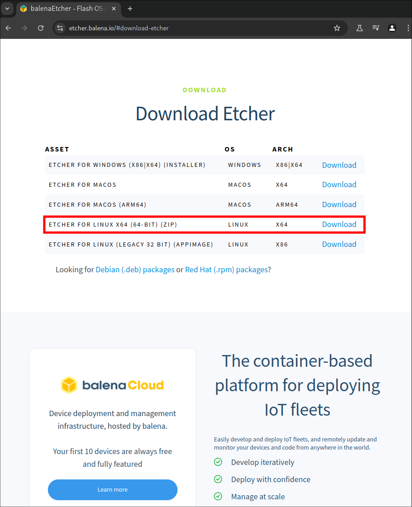
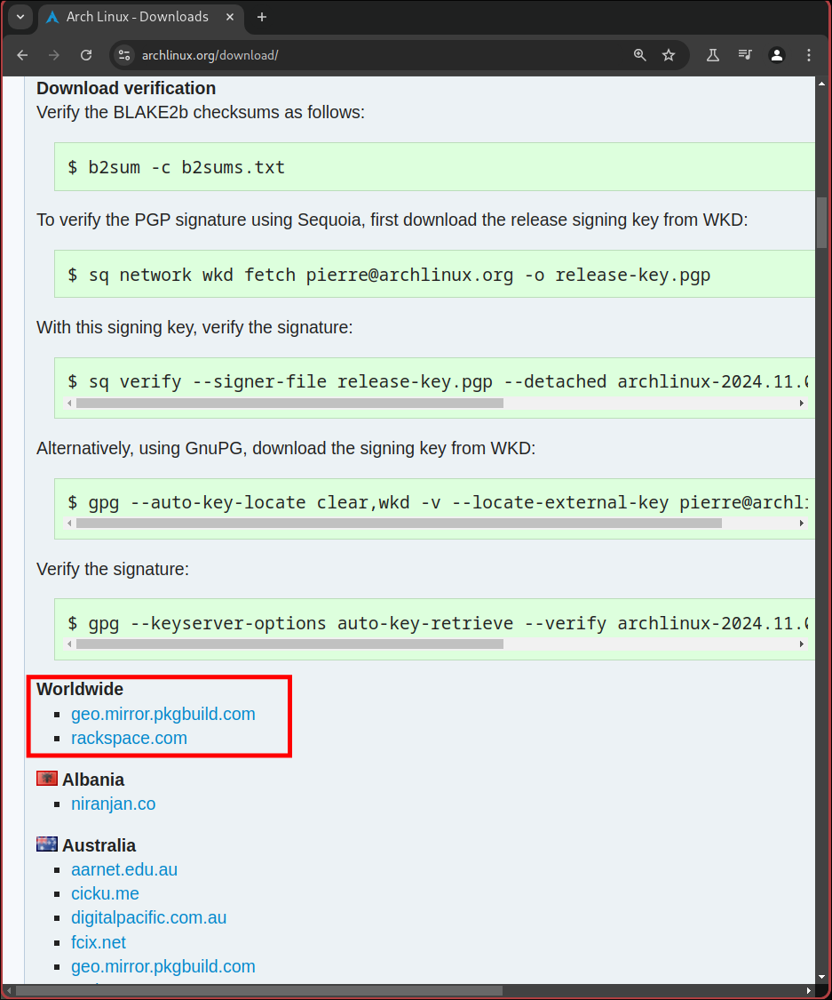
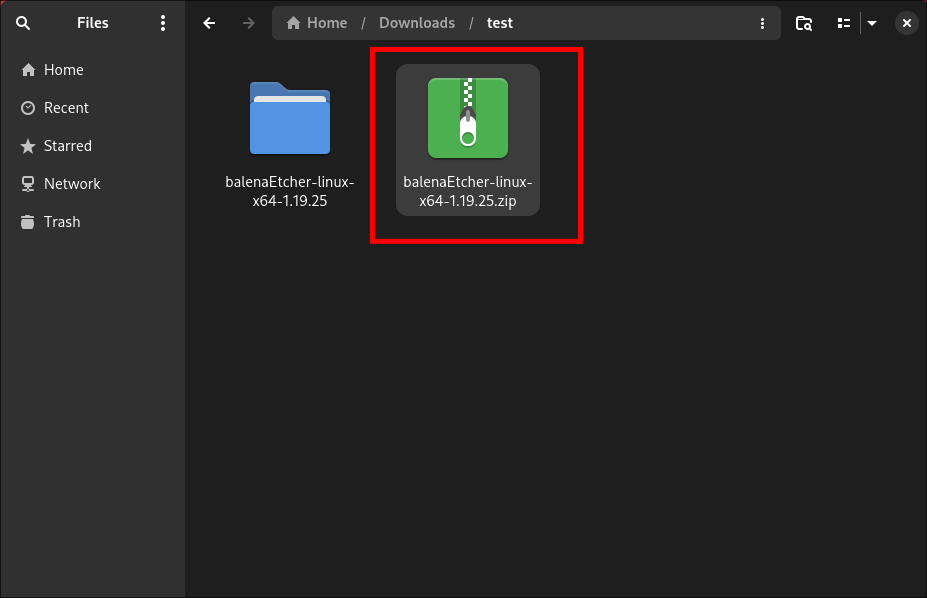
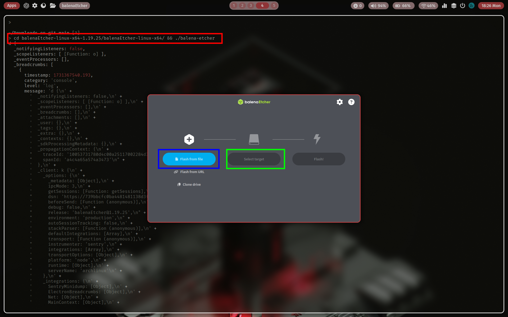

Introduction
text here
Installing Arch (Main OS)
1. Downloading the iso
# Go grab the iso off the official archlinux.org page
- https://archlinux.org/download/ -> Download latest iso release
- https://geo.mirror.pkgbuild.com/iso/2024.11.01/ -> If you dont know what to pick
# Once iso is installed whip up some balena etcher
- https://etcher.balena.io/#download-etcher -> Balena Download


2. Get Balena Running
# We need to unzip the zip file so go ahead and run this command ...
- unzip ~/Downloads/balenaEtcher-linux-x64-1.19.25.zip . # Zip name will differ based on release version
# Once unzipped go ahead an run ...
- cd balenaEtcher-linux-x64-1.19.25/balenaEtcher-linux-x64 && ./balena-etcher
- Once balena is up and running select flash from file and navigate to your downloads folder. Select the archlinux iso
- After selecting the iso to flash go ahead and plug your 8+gb usb stick into the device and it will immediatly pick up on it and select it for you.
- Last step for this section is click flash and put your password in and begin the flash.


3. Entering The boot menu and selecting to boot from the usb we have just created.
sudo pacman -R package-name
4. Cleaning the Package Cache
sudo pacman -Sc
5. Checking Disk Space
df -h